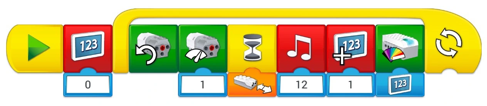

Οδηγίες συναρμολόγησης
Οδηγίες βήμα προς βήμα για τη συναρμολόγηση της ρομποτικής μπασκέτας (24 σελίδες).
Άνοιγμα PDF ↗Κατασκευάσαμε μια ρομποτική μπασκέτα με LEGO WeDo 2.0 και συνδυάσαμε τη μηχανική κίνηση με αισθητήρα και ψηφιακή καταμέτρηση πόντων.

Η ομάδα μας αναλαμβάνει μια αθλητική πρόκληση: να κατασκευάσει μια ρομποτική μπασκέτα που συνδυάζει το παιχνίδι με τη μηχανική και τον προγραμματισμό. Συναρμολογούμε πρώτα μια σταθερή βάση και τον ψηλό μηχανισμό, τοποθετούμε τον κινητήρα και τον άξονα και κατασκευάζουμε τον πράσινο στόχο με το αστείο πρόσωπο βατράχου. Παρατηρούμε πώς η περιστροφή του κινητήρα μπορεί να μετατραπεί σε ευθύγραμμη κίνηση με τη βοήθεια οδοντωτών εξαρτημάτων. Στη συνέχεια οργανώνουμε έναν μικρό αγώνα: ξεκινάμε τον μετρητή από το μηδέν, δοκιμάζουμε τη λειτουργία του κινητήρα και αξιοποιούμε τον αισθητήρα για να ενεργοποιήσουμε την καταμέτρηση. Κάθε αναγνώριση συνοδεύεται από ήχο και αύξηση της ψηφιακής ένδειξης. Η αποστολή μας ολοκληρώνεται όταν η κατασκευή λειτουργεί με συνέπεια και μπορούμε να εξηγήσουμε πώς συνεργάζονται ο μηχανισμός, ο αισθητήρας και οι εντολές του προγράμματος.
Στην αρχή εμφανίζουμε τον αριθμό 0. Ορίζουμε τη φορά περιστροφής του κινητήρα και την ισχύ του στην τιμή 1. Έπειτα το πρόγραμμα περιμένει σήμα από τον αισθητήρα. Όταν η αναμονή ολοκληρωθεί, αναπαράγει τον ήχο 12, αυξάνει την αριθμητική ένδειξη κατά 1 και εκτελεί εντολή χρώματος. Όλη η ακολουθία βρίσκεται σε επανάληψη, για να συνεχίζεται η καταμέτρηση.

Οδηγίες συναρμολόγησης και βίντεο λειτουργίας.
Οδηγίες βήμα προς βήμα για τη συναρμολόγηση της ρομποτικής μπασκέτας (24 σελίδες).
Άνοιγμα PDF ↗Δες τη ρομποτική μπασκέτα σε δράση.
Άνοιγμα στο YouTube ↗🏀 ΔΙΑΔΡΑΣΤΙΚΟ QUIZ · LEGO WeDo 2.0
10 ερωτήσεις με τα πραγματικά χρωματιστά τουβλάκια που χρησιμοποιήσαμε, άμεση επεξήγηση και τελική βαθμολογία.